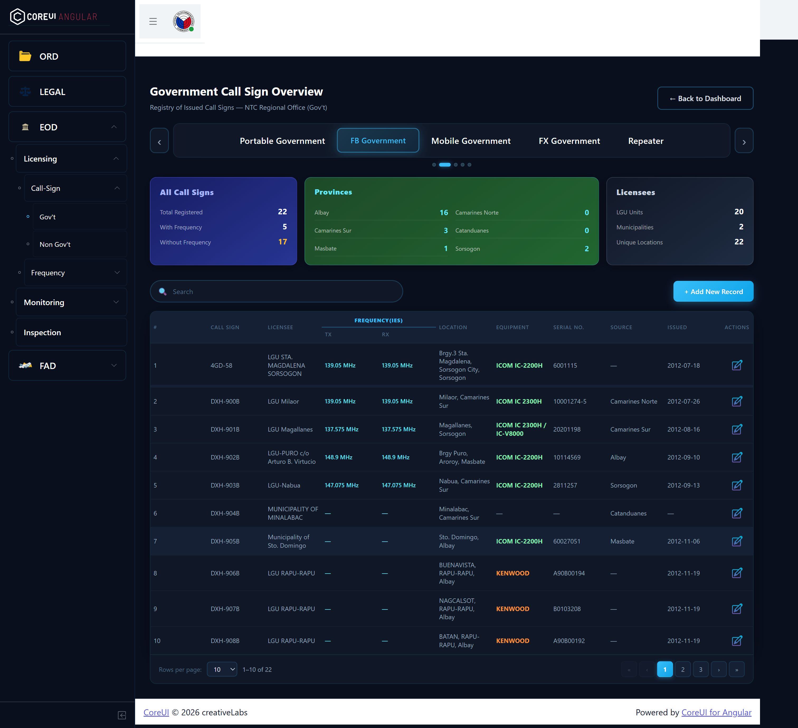
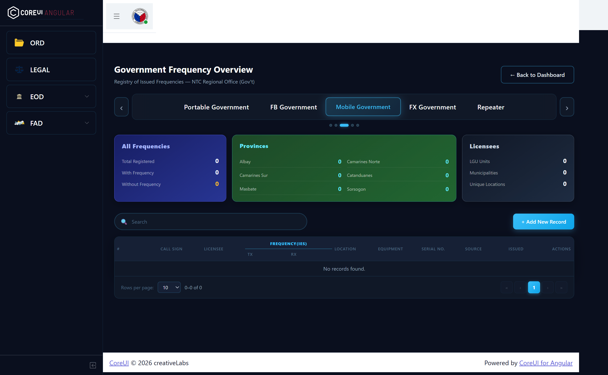
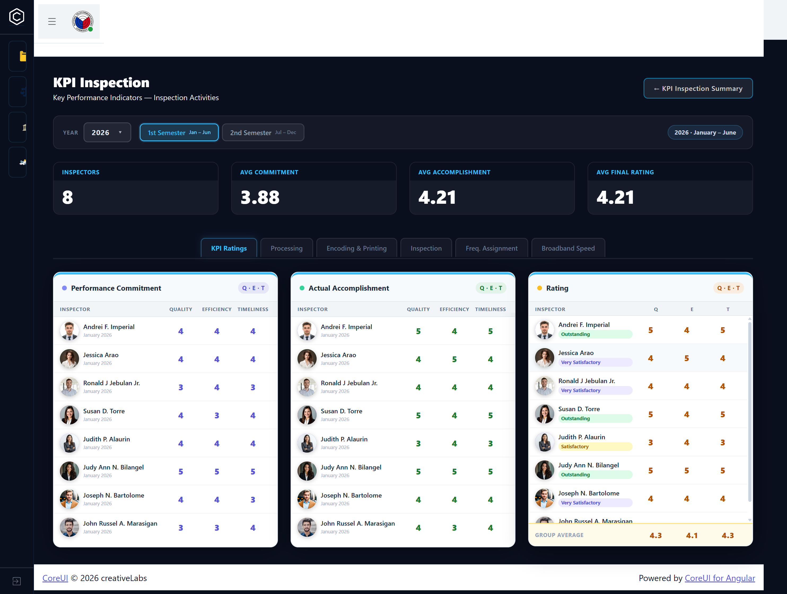
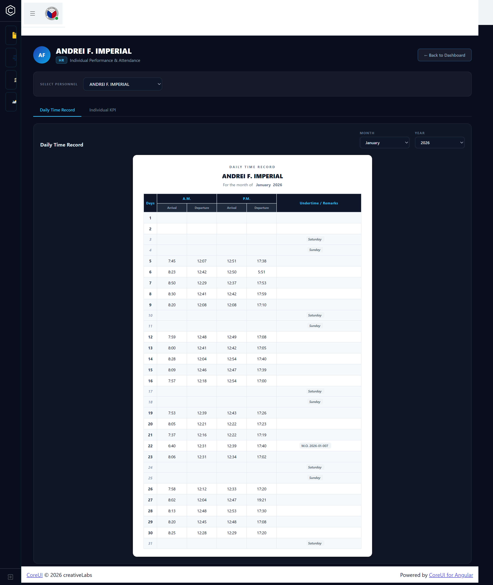
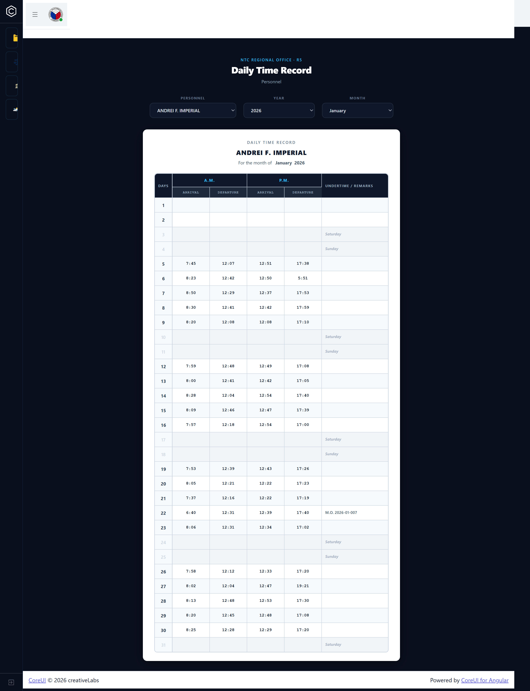

NTC Region V Company Website
The official company website redesign for the National Telecommunications Commission (NTC) Region V, developed during internship. Built with Angular and Tailwind CSS — providing an accessible, modern digital front for the government agency featuring service info, news, public advisories, and contact details for the Bicol Region office.
Gallery






Overview
NTC Region V needed an updated public-facing website that clearly communicates services, regulatory news, and contact information to citizens in the Bicol region. The site needed to be accessible, fast-loading, and consistent with government branding standards.
I led the frontend development and UI design — redesigning each page from scratch using Angular components and Tailwind CSS, with a clean, professional look fitting a government agency.
Key Features
- Homepage with hero section, announcements, and quick service access
- Services directory covering NTC regulatory and licensing services
- News and advisories page with dynamic content sections
- Contact page with office information and inquiry form
- Fully responsive layout optimized for mobile citizens
- Angular routing for single-page app navigation
- Tailwind CSS utility-first styling for consistent design system
Development Process
Content Audit & Information Architecture
Reviewed the existing NTC website, identified content gaps, and restructured the information architecture for better public access and navigation.
UI Design (Figma)
Wireframed all pages and produced high-fidelity Figma mockups. Applied NTC's official color palette while modernizing the visual language.
Frontend Build (Angular + Tailwind)
Implemented reusable Angular components. Used Tailwind CSS for rapid responsive styling, ensuring pixel-accurate implementation of the Figma designs.
Review & Handoff
Presented the final website to NTC supervisors, incorporated feedback, and prepared the codebase for internal deployment on the agency's hosting infrastructure.